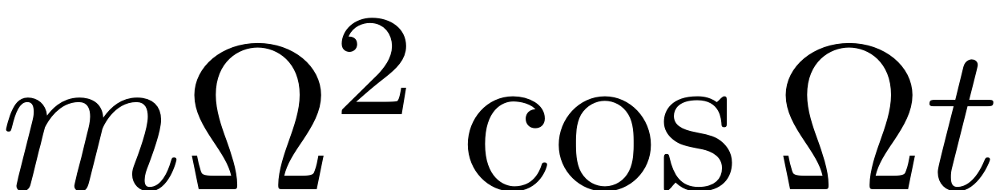
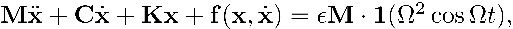
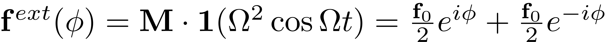
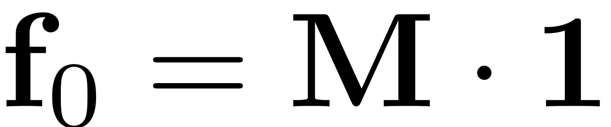
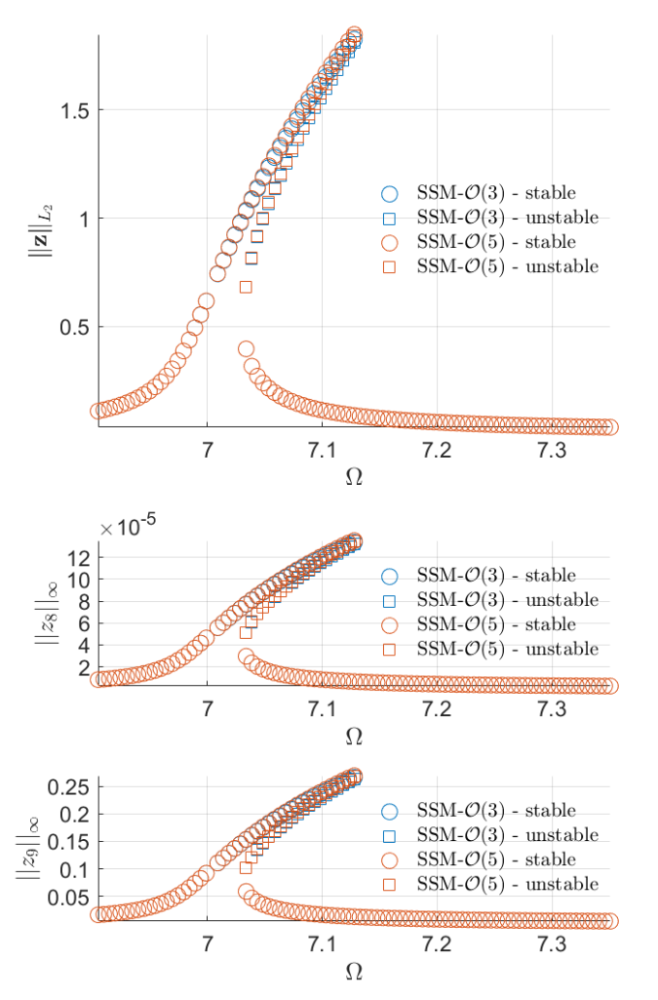

Euler Bernoulli beam with cubic spring and damper
Contents
In this notebook, we consider the forced response curve of a Euler Bernoulli beam with cubic spring and damper at the free end, subject to a harmonic base excitation. In the frame attached to the oscillating base, the beam is subject to harmonic excitation in the form , where  is the excitation frequency.
is the excitation frequency.
Generate model
clear all nElements = 5; % number of beam elements kappa = 4; % cubic spring coefficient gamma = 0; % cubic damping coefficient [M,C,K,fnl,~] = build_model(kappa, gamma, nElements); n = length(M);
Dynamical system setup
We consider the forced system

In our code, the dynamical system is represented by the system matrices and an implementation of the nonlinear internal forces.
DS = DynamicalSystem(); set(DS,'M',M,'C',C,'K',K,'fnl',fnl); set(DS.Options,'Emax',5,'Nmax',10,'notation','multiindex'); set(DS.Options,'BaseExcitation',true); % Frequency dependent forcing amplitude
We assume periodic forcing of the form

where .
epsilon = 5e-5; f_0 = M*ones(n,1);
The Fourier coefficients of the forcing and the forcing amplitude need to be passed to the dynamical system.
kappas = [-1; 1]; coeffs = [f_0 f_0]/2; DS.add_forcing(coeffs, kappas,epsilon);
Linear Modal analysis and SSM setup
Now the reduced spectral content linear part of the dynamicals system is analysed. For this a set number (see DSOptions) of modes is computed.
[V,D,W] = DS.linear_spectral_analysis();
Due to high-dimensionality, we compute only the first 5 eigenvalues with the smallest magnitude. These would also be used to compute the spectral quotients
Assuming a proportional damping hypthesis with symmetric matrices
modal damping ratio for 1 mode is 8.840017e-04
modal damping ratio for 2 mode is 5.488086e-03
modal damping ratio for 3 mode is 1.541080e-02
modal damping ratio for 4 mode is 3.044305e-02
modal damping ratio for 5 mode is 5.052761e-02
The first 10 nonzero eigenvalues are given as
1.0e+02 *
-0.0001 + 0.0700i
-0.0001 - 0.0700i
-0.0024 + 0.4389i
-0.0024 - 0.4389i
-0.0190 + 1.2327i
-0.0190 - 1.2327i
-0.0741 + 2.4343i
-0.0741 - 2.4343i
-0.2042 + 4.0370i
-0.2042 - 4.0370i
Choose Master subspace (perform resonance analysis)
Next the spectral subspace over which the invariant SSM is to be constructed is chosen. The notation in which the SSM is to be computed is set to the multi-index notation. Relative tolerances are triggered at a relative modal distance of 0.1 (see DSOptions), which allows us to get an overview of how separated the modes are prior to computing the SSM. The spectral subspace consisting of the primary mode-pair is chosen as a base for the invariant manifold.
S = SSM(DS); set(S.Options, 'reltol', 0.1,'notation','multiindex') masterModes = [1,2]; S.choose_E(masterModes);
The master subspace contains the following eigenvalues lambda1 == - 0.0061885 + 7.0006i lambda2 == (-0.0061885) - 7.0006i No (near) outer resonances detected in the (truncated) spectrum sigma_out = 3300 (near) inner resonance detected for the following combination of master eigenvalues: 2*lambda1 + 1*lambda2 == lambda1 3*lambda1 + 2*lambda2 == lambda1 4*lambda1 + 3*lambda2 == lambda1 5*lambda1 + 4*lambda2 == lambda1 1*lambda1 + 2*lambda2 == lambda2 2*lambda1 + 3*lambda2 == lambda2 3*lambda1 + 4*lambda2 == lambda2 4*lambda1 + 5*lambda2 == lambda2 sigma_in = 3300
Forced response curves using SSMs
Obtaining forced response curve in reduced-polar coordinate
Now we setup the SSM computation, to compute the forced response of the beam, if driven in resonance with the first mode.
The SSM is to be computed up to order 3 and 5, to monitor the convergence of the parametrisation and reduced dynamics expansions. We wish to display the resulting FRCs along the output DOFs at the tip of the beam and set the corresponding parameters accordingly.
order = [3,5]; % SSM approximation order outdof = [n-2 n-1]; % degree of freedom at which output is displayed
Now we setup the options for the computation of the SSM. For the computation of the FRC we choose the level set method. The steady states are therefore computed directly from the polar ODE of the reduced dynamics (see computation).
set(S.FRCOptions, 'method','level set')
We set the relative tolerance for internal resonances and choose to include nonautonomous contributions to the invariant manifold and reduced dynamics. For the mesh over which the polar ODE is evaluated to find fixedpoints we choose a 200 by 100 grid in the polar coordinates. The number of frequencies on which the ODE should be evaluated is set to 100. The parameter rhoScale is used to scale the amplituderange in which the reduced system response is to be analysed.
set(S.Options, 'reltol', 1,'IRtol',0.02,'contribNonAuto',true) set(S.FRCOptions, 'nRho', 200, 'nPsi', 100, 'nPar', 100,'rhoScale', 2 )
We now choose the frequency range over which the FRC is to be computed.
omega0 = imag(S.E.spectrum(1)); omegaRange = omega0*[0.98 1.05];
Finally extract forced response curve via a computation of the SSM and the reduced dynamics on it.
FRC = S.extract_FRC('freq',omegaRange,order);
*****************************************
Calculating FRC using SSM with master subspace: [1 2]
The master subspace contains the following eigenvalues
lambda1 == - 0.0061885 + 7.0006i
lambda2 == (-0.0061885) - 7.0006i
(near) outer resonance detected for the following combinations of master eigenvalues
They are in resonance with the following eigenvalues of the slave subspace
6*lambda1 + 0*lambda2 == - 0.24089 + 43.8926i
7*lambda1 + 0*lambda2 == - 0.24089 + 43.8926i
7*lambda1 + 1*lambda2 == - 0.24089 + 43.8926i
8*lambda1 + 1*lambda2 == - 0.24089 + 43.8926i
8*lambda1 + 2*lambda2 == - 0.24089 + 43.8926i
0*lambda1 + 6*lambda2 == (-0.24089) - 43.8926i
0*lambda1 + 7*lambda2 == (-0.24089) - 43.8926i
1*lambda1 + 7*lambda2 == (-0.24089) - 43.8926i
1*lambda1 + 8*lambda2 == (-0.24089) - 43.8926i
2*lambda1 + 8*lambda2 == (-0.24089) - 43.8926i
sigma_out = 3300
(near) inner resonance detected for the following combination of master eigenvalues:
2*lambda1 + 1*lambda2 == lambda1
3*lambda1 + 2*lambda2 == lambda1
4*lambda1 + 3*lambda2 == lambda1
5*lambda1 + 4*lambda2 == lambda1
1*lambda1 + 2*lambda2 == lambda2
2*lambda1 + 3*lambda2 == lambda2
3*lambda1 + 4*lambda2 == lambda2
4*lambda1 + 5*lambda2 == lambda2
sigma_in = 3300
Due to (near) outer resonance, the exisitence of the manifold is questionable and the underlying computation may suffer.
Attempting manifold computation
Manifold computation time at order 2 = 00:00:00
Estimated memory usage at order 2 = 1.62E-02 MB
Manifold computation time at order 3 = 00:00:00
Estimated memory usage at order 3 = 2.51E-02 MB
Manifold computation time at order 4 = 00:00:00
Estimated memory usage at order 4 = 3.17E-02 MB
Manifold computation time at order 5 = 00:00:00
Estimated memory usage at order 5 = 4.76E-02 MB
gamma =
1.0e+02 *
-0.0000 + 0.5938i
-0.0030 - 8.1936i
Total time spent on FRC computation upto O(3) = 00:00:06
Total time spent on FRC computation upto O(5) = 00:00:12
